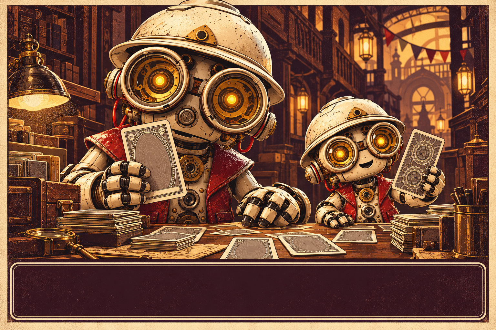
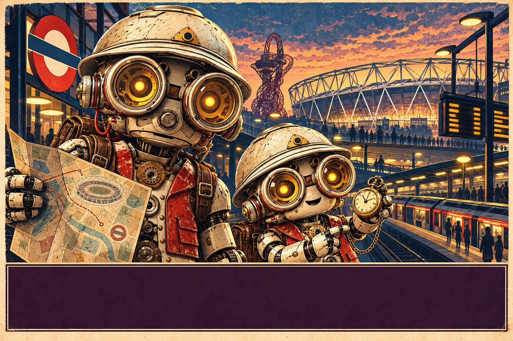
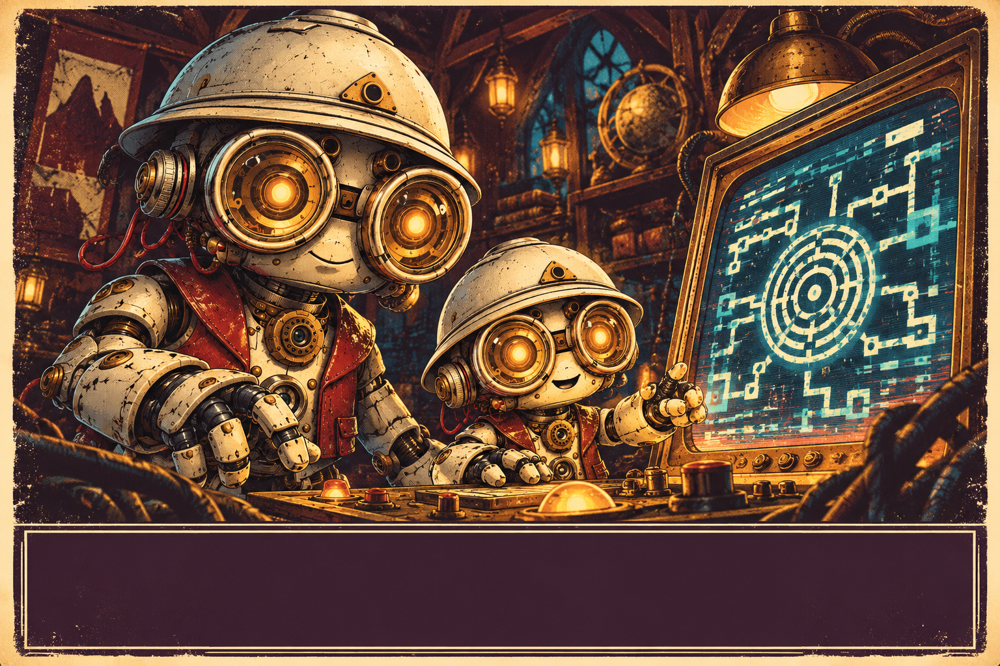
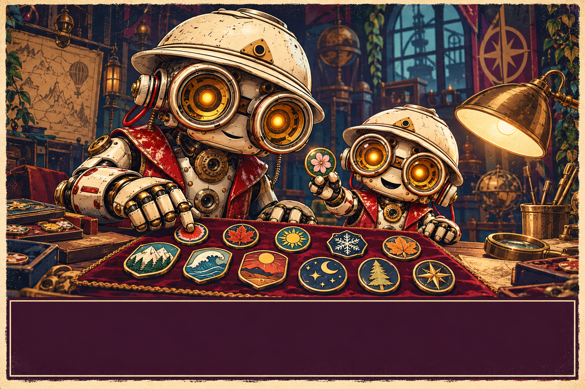
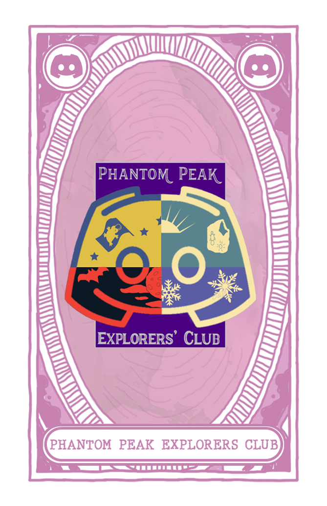
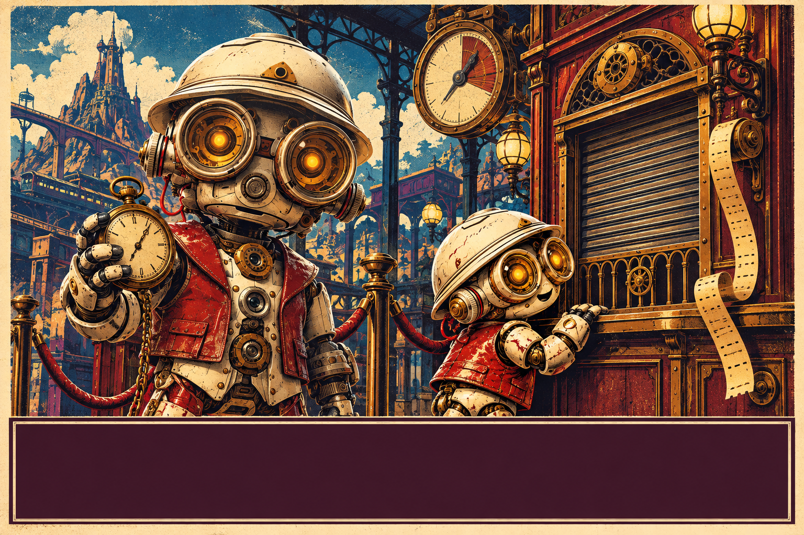

The Trail Archive
Browse trail recaps by season, year, character or theme. Each season has a PDF you can download.
Explore the archiveAn index of useful curiosities
Trails to revisit, journeys to plan and a few peculiar things to try. Everything made by the club is filed here, with room for discoveries from fellow explorers.
Browse the kit01 / From the club desk
Five ways to plan, play and explore.

Browse trail recaps by season, year, character or theme. Each season has a PDF you can download.
Explore the archive
Compare Phantom Peak dates with London Stadium events and check TfL travel notices before you set off.
Plan a visit
A story-led Jonabot puzzle trail through an increasingly unstable console. Your progress is saved on your device.
Start the trail
See the proposed PPEC pins and tell the club which designs you would genuinely buy if they are made. No order or payment is taken.


A quick check on Phantom Peak's ticket status and the countdown to its planned Stratford reopening.
Check the countdown02 / From fellow explorers
A place for useful things made by the wider PPEC community.
The next page is yours
There are no member tools filed here yet. PPEC can add them to this shelf as they arrive.